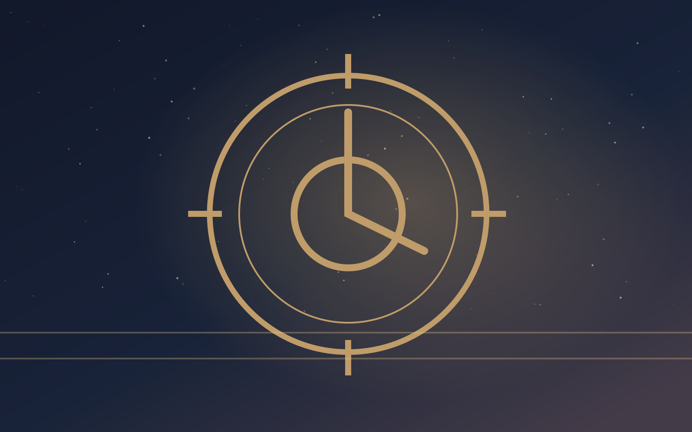

CHAPITRE II - ATELIER · NIVEAU -2
L’atelier des étoiles

Sous les rails, une mécanicienne rafistole des ampoules avec de minuscules fragments d’horloge. Chaque ampoule contient une minute rendue par quelqu’un. « La ville pourrait rallumer le jour, dit-elle, mais personne ne peut décider à la place de tous. » Elle te tend un schéma de la ligne et t’indique un pont où les habitants peuvent voir la première lueur.
Le choix est maintenant entre garder la ligne en marche ou laisser la ville choisir.